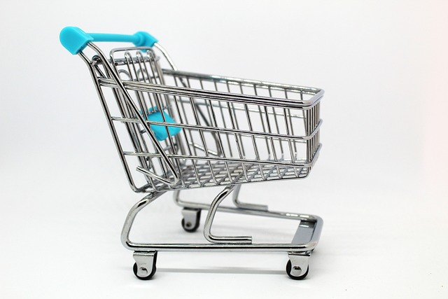
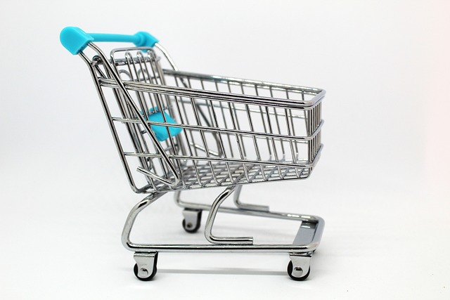
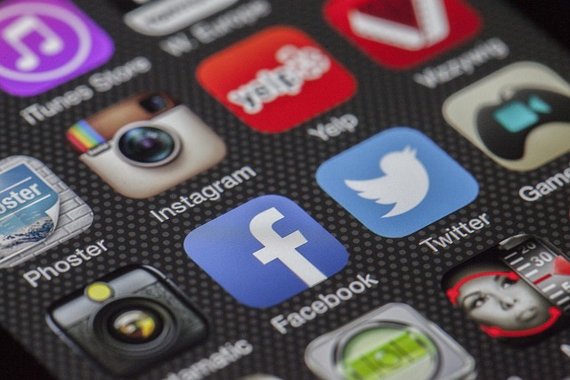

En la era de internet tener una tienda online es un complemento para la tienda física si la hubiere o una forma de hacer negocio si dispone de uno o varios productos y quieres mostrarlos al mercado.
En la era digital actual, tener presencia en internet ya no es una opción, sino una necesidad.
Una página web es la carta de presentación de una empresa ante el mundo, y puede marcar la diferencia entre crecer o quedarse atrás frente a la competencia.

Una página web permite que potenciales clientes encuentren fácilmente los productos o servicios de una empresa, sin importar su ubicación geográfica. Esto amplía el alcance del negocio, permitiendo atraer nuevos mercados y aumentar las oportunidades de venta.
A diferencia de una tienda física, una web está disponible los 365 días del año, las 24 horas. Esto permite que los usuarios accedan a la información cuando lo deseen, mejorando la experiencia del cliente y facilitando el proceso de compra.
Una empresa con un sitio web profesional transmite seriedad y confianza. Los consumidores suelen investigar en internet antes de tomar una decisión de compra, por lo que una buena presencia digital puede ser determinante para ganarse su confianza.
Además de informar, una página web es una poderosa herramienta de marketing. Permite implementar estrategias como SEO, publicidad digital, análisis de comportamiento del usuario y mucho más, ayudando a optimizar el rendimiento del negocio
.En resumen, contar con una página web bien diseñada es una inversión clave para cualquier empresa que desee mantenerse competitiva en el mercado actual.
En la era de internet tener una tienda online es un complemento para la tienda física si la hubiere o una forma de hacer negocio si dispone de uno o varios productos y quieres mostrarlos al mercado.
A la misma vez si quieres ofrecer tus servicios, tratense de profesionales como abogados, médicos, fontaneros o cualquier otra actividad.
Una tienda online llamada también ecommerce o comercio electrónico es una puerta abierta al mundo, que puedes orientar a un lugar geográfico concreto desde lo más pequeño a lo más remoto en base a la capacidad para responder a la demanda, con una serie de ahorro en costes que no te podías permitir con una tienda física.
A diferencia de una tienda física, una tienda online permanece visible todos los días, por lo que el potencial comprador puede realizar la compra a cualquier hora.
La llegada de las redes sociales y los dispositivos móviles ha hecho que los contenidos de la web se den a conocer al público en general
.No significa que sean gratis, puesto que hay publicidad que puede hacer el mismo usuario o contratando a profesionales y publicidad de pago.
En resumen, contar con una tienda online bien diseñada te abre a un campo inimaginable sobre todo si consigues adelantar a tu competenciaDesde la aparición de las primeras redes sociales como el caso de Facebook, el mundo online ha cambiado, no sólo para el público en general sino también para la empresa
Los clientes, entendidos como empresas o pymes, pueden abrir cuenta en distintas redes sociales, siendo una de las más conocidas o donde se encuentra el mayor públicop objetivo en Facebook
Aunque también está X (antigua twitter) donde pueden enviar contenido e interactuar con público potencial.
Linkedin para perfiles más profesionales para buscar personal y hacer contactos con otras pymes o profesionales de servicios. Publicidad más gráfica como Instagram o Tiktok donde la empresa puede compartir imágenes y vídeos.
Por último Youtube que es una plataforma gigante donde se publican cantidad de vídeos.
Una página web permite que potenciales clientes encuentren fácilmente los productos o servicios de una empresa, sin importar su ubicación geográfica.
Esto amplía el alcance del negocio, permitiendo atraer nuevos mercados y aumentar las oportunidades de venta.
Para que surtan efectos, la gestión de redes sociales ha de hacerse de un modo profesional atendiendo a las solicitudes de los potenciales clientes y publicando con frecuencia contenido de la empresa, de sus productos.
En resumen, estar presente en redes sociales es un valor añadido para la empresa.